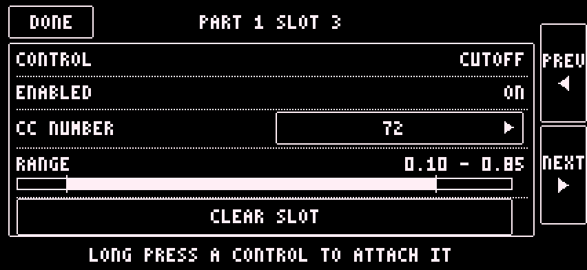
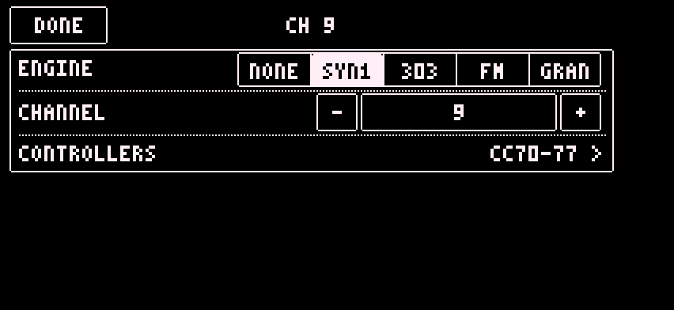

The main screens are four pages. Swipe left or right between them.

How to get back:
| Screen | Back |
|---|---|
| Part editor | RETURN, bottom right |
| Looper, SPACE, DRIVE, HEAT, LOOPER SPACE | RETURN, top left |
| SOUNDS | CLOSE |
| BROWSE | DONE |
| AUDIO, PROJECT, part and FX box settings, OUTPUT PHONE | DONE |
| Name keyboard | CANCEL or DONE |
| Sampler pad browser | BACK |
| Main pages | Swipe |
Editor pages turn with the PREV and NEXT buttons at the right edge. They wrap: PREV on the first page goes to the last. A knob takes every drag, so swiping does not turn pages in editors.
The bar at the bottom of the editor has four buttons:
Hold a part box on the display grid to switch the part off. Hold again to switch it on. An off part is not rendered.
At most two Synth One and two TB-303 parts can run at once.
| Box | Channel | Notes and CCs |
|---|---|---|
| Parts 1 to 4 | 9 to 12 | Notes play the part. CC 70 to 77 move the part's knobs (see below). Program Change 0 to 126 loads Sound 1 to 127. |
| LOOPER | 13 | CC 70 is DIAL 1 (LOOP). CC 72 is DLY. CC 73 is the loop divider. CC 74 to 77 are the loop EQ: HIGH, MID, LOW, FILTER. DIAL 2 (INPUT) has no default CC. Notes C1 to C5 are the loop key. See Looper. |
| SPACE | 14 | CC 70 to 73: delay send from parts 1 to 4. CC 74 to 77: reverb send from parts 1 to 4. |
| DRIVE | 15 | CC 70 to 73: drive send from parts 1 to 4. CC 74 to 77: fuzz send from parts 1 to 4. |
| HEAT | 16 | CC 70 to 77: HIGH, MID, LOW, FILTER, DRIVE, TONE, WIDTH, drive ON. |
| Pattern channel | 16 | Program Change 0 to 127 selects pattern A01 to H16. It reaches no part or FX box. |
The default CC 70 to 77 of each synth:
| CC | Synth One | TB-303 | FM | Sampler |
|---|---|---|---|---|
| 70 | cutoff | CUTOFF | CUTOFF | POSITION |
| 71 | resonance | RESO | RESO | SCAN |
| 72 | filter envelope | ENV MOD | BRIGHT | SPRAY |
| 73 | attack | DECAY | MOD DECAY | SIZE |
| 74 | release | ACCENT | FEEDBACK | DENSITY |
| 75 | LFO 1 amount | DRIVE | ATTACK | PITCH |
| 76 | delay mix | DLY SEND | RELEASE | CUTOFF |
| 77 | volume | volume | volume | RESO |
Any row can be changed. The sampler's SLICE machine has no fixed default CC rows. [TODO: which CCs SLICE gets by default]
A CC has one meaning. The same CC number can be used on different parts.
Program Change 0 loads Sound 1. Program Change 126 loads Sound 127. An empty slot loads an INIT sound on the part's current engine. A Sound on another engine switches the part's engine. Program Change 127 has no Sound.
Patterns are chosen the same way on the pattern channel.
Each part and each FX box has eight CC rows (slots). Their default numbers are CC 70 to 77.
See the CC numbers of every box:
Assign a control to a CC:
Clear it: long press the knob again. If all eight rows are used, the app says so and changes nothing.
Reassign a CC number:
Two rows on one part cannot use the same CC number. The app shows CC n IS USED BY SLOT m.

The slot page also has CONTROL, ENABLED, RANGE and CLEAR SLOT. See Settings.

A Sound loaded from another engine also switches the part's engine.
The mixer page has six strips: CH 9 to CH 12 (parts 1 to 4), DT IN (the Digitakt) and MST (master). Master is after the FX.
Every strip has a CLIP indicator. Levels are pattern state.
The mixer levels get their CCs on the CH 16 box (HEAT): on its slot pages, set MIXER LEVEL. The mixer rows only work while that box has its effect loaded.